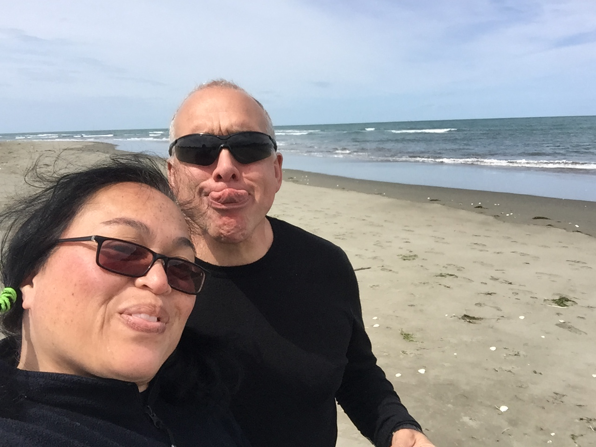

About
Sprint 1 - Technical

SPRINT 1 Cultural
SPRINT 2 Technical
SPRINT 2 Cultural
CONTACT
Sprint 1 - Cultural
Sprint 1 - Technical
Sprint 2 - Cultural
Sprint 2 - Technical
Sprint 3 - Cultural
Sprint 3 - Technical
Sprint 4 - Cultural
Sprint 4 - Technical
Sprint 5 - Cultural
Sprint 5 - Technical
Welcome to my website
Here is the link
It will eventually contain a list of links to all my blogs.